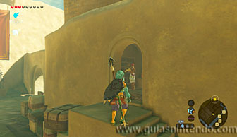
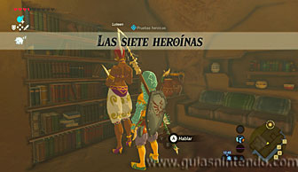
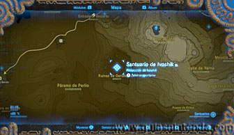
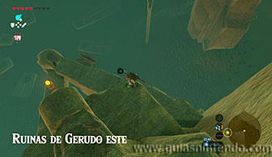
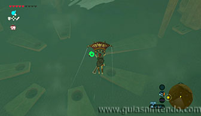
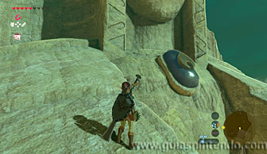
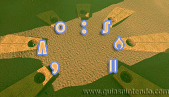
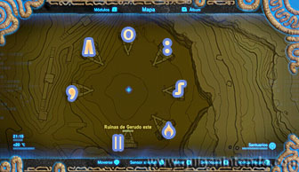
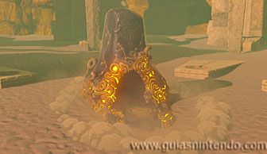
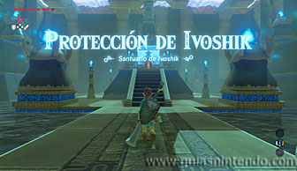

Se encuentra en la región de la torre del cañón, pero como está oculto, tendrás que completar una Prueba heroica (Las 7 heroínas) para sacarlo a la luz. Para activar la prueba heroica (aunque no es necesario hacerlo) debes hablar en la ciudadela con Loteen (junto a una biblioteca, dentro de una casa situada al noroeste).

El santuario se encuentra al este de la Ciudadela Gerudo (Ruinas de Gerudo este), enterrado en el centro de un círculo formado por enormes estatuas.

Cuando llegues verás 7 agujeros delante de cada una de las 7 estatuas. También encontrarás repartidas por la zona 7 esferas (una de ellas está sobre las manos de una de las estatuas, tendrás que subir para localizarla, el resto están abajo semienterradas, dentro de un agujero o a la vista). En cada agujero debes introducir una de estas esferas metálicas, pero cada una tendrá que estar en su agujero correspondiente.

Para saber donde va cada esfera debes fijarte en los dibujos que tienen grabados cada una. Después debes fijarte en el símbolo de cada agujero, lo que ocurre es que el símbolo no lo vas a encontrar en ellos, sino en algún lugar de las estatuas que tienen detrás. Puedes localizarlos en los pies, en el pecho, arriba del todo...

Si tienes problemas para encontrarlos, mira las siguientes foto que te indican donde debe ir cada esfera (teniendo en cuenta que el símbolo del círculo es el agujero que está situado al norte según el mapa del juego).

Cuando los hayas colocado, automáticamente verás cómo aparece la entrada del santuario. Dentro de él, solo debes avanzar para abrir el cofre que contiene una Lanza de fuego y llegar al altar para conseguir el símbolo de valía correspondiente.
